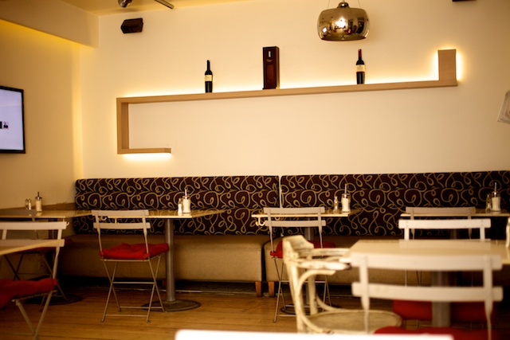
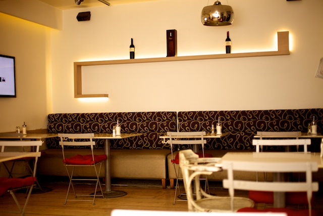

About us
Kısa bir süre ayrılıktan sonra, Nişantaşı’nın meşhur ÇİÇEK IZGARA’sı geri döndü. Üstelik daha fazla seçenek sunan bir güçbirliği yaparak hizmet vermeye başladı. CELINE’S CAFÉ & DINING ROOM ismiyle açılan bu yeni mekan, bünyesinde hem muhteşem bir pizza ustasını hem de Çiçek Izgara’nın özel köftelerini yapan Şefi Gökhan Yeniay’ı barındırıyor.
Pizza, Hamburger ve Köfte bu mekanın çatısı altında birleşen en önemli üç ana yemeği. Elbette her tür damak zevkine hitap eden salataları unutmamak gerekiyor. Menüde herkesin peşinden koştuğu, arasında ünlü müdavimlerinin bulunduğu pideli köfte, bol bonfileli Celine’s pizza, özellikle bayan müşterilerin tercih ettiği avakado salatası göze çarpıyor. Zeytinyağlı bazı çok özel tabakların da dikkat çektiği Celine’s Café’de ayrıca burada ürünlerin yapımında kullanılan zeytinyağları, kolonya ve bazı diğer doğal ürünler de satılıyor.
Dekorasyonundaki doğallık ve rustik konsepti Celine’s Café’de vakit geçirenleri kendine hayran bırakıyor. Arka tarafında yer alan muhteşem minik terası da Celine’s Café’ye ayrı bir güzellik katıyor. Valikonağı Caddesi’nin en işlek noktasında yer alan CELINE’S CAFÉ & DINING ROOM haftanın her günü 08:00 – 22:30 saatleri arasında açık. Sadece Pazar günleri 09:00 – 20:00 arası hizmet veriyor.
 
